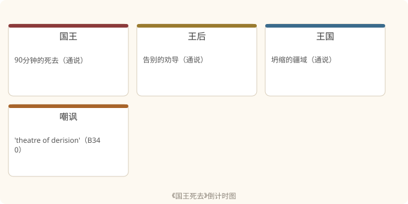

国王死去
一、基本信息
| 作者 | 欧仁·尤涅斯库 |
|---|---|
| 成书/出版 | 1962年（Britannica B340：Exit the King (1962)——中译名待核） Eugene Ionesco — Encyclopaedia Britannica（百科全书） |
| 国别/地区 | 法国 |
| 时代 | 现当代 · 20世纪60年代初 |
| 体裁 | 戏剧 |
| 语言 | 法语 |

《国王死去》倒计时图（主题·结构图）
二、创作背景
Britannica（B340）：Exit the King (1962)——剧作列表。
Britannica（B340）：尤涅斯库——荒诞派开创者之一；'theatre of derision'。
题材（通说待核）：国王贝朗热一世的90分钟死去——死亡作为倒数计时。
三、内容脉络
（通说待核）王后玛尔戈的告别与王国的坍缩。
（通说待核）'90分钟'的死亡倒计时。
四、主要人物表
| 人物 | 身份 | 说明 |
|---|---|---|
| 贝朗热一世 | 国王 | （通说待核） |
| 玛尔戈王后 | 第一任王后 | （通说待核） |
五、主题与艺术特点
- 死亡的独角戏（通说待核）。
- 'derision'的告别（B340：theatre of derision）。
- 王权的崩塌（通说待核）。
六、影响与评论
- Britannica：Exit the King (1962)（B340）。
Eugene Ionesco — Encyclopaedia Britannica（百科全书） - Britannica：荒诞派开创者（B340 交叉）。
Eugene Ionesco — Encyclopaedia Britannica（百科全书）
七、阅读建议
难点
- 死亡的舞台化。
- 与《犀牛》的对照。
- 《国王死去》中译名（《国王临终》两说——通说待核）。
- 法文原版。
尤涅斯库中期；与《犀牛》《椅子》对读。
八、待核实
- 贝朗热人名核对（通说）。
- 1962年首演细节待核。
- '90分钟'结构待核。